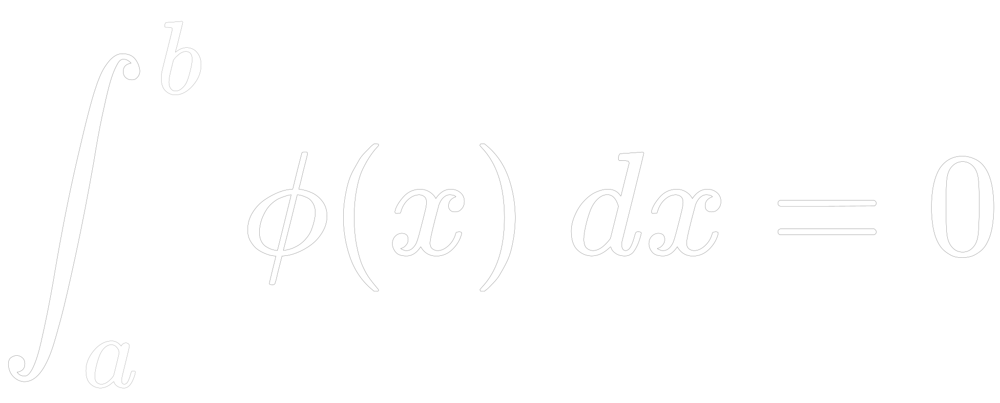

Während andere Messenger, Telemedizin-Anwendungen und Videokonferenzlösungen immernoch keine Ende-zu-Ende-Verschlüsselung umgesetzt haben, gehen wir den nächsten Schritt und machen vor, wie es noch sicherer geht. Bei der Ende-zu-Ende-Verschlüsselung kann selbst der Anbieter eines Kommunikationsdienstes nicht auf Kommunikationsinhalte zugreifen (siehe z.B. [1], [2]). Die neue Ende-Verschlüsselung denkt dieses Konzept weiter und sorgt dafür, dass wirklich niemand auf Kommunikationsinhalte zugreifen kann. Dazu werden Nachrichten noch vor der Übertragung über unsichere Kommunikationsnetze mit Hilfe einer konstant-linearen Nullabbildung kryptographisch vor unerwünschtem Belauschen gesichert. Die Ende-Verschlüsselung ist das erste massentaugliche Verschlüsselungsverfahren mit perfekter, informationstheoretischer Sicherheit. Probiere es gleich aus!
Gebe hier eine Nachricht ein, um sie mit der Ende-Verschlüsselung zu verschlüsseln!
Technisch wird die Ende-Verschlüsselung realisiert über die Integration der Nullfunktion über die Integrationsgrenzen a = 1⁄m und b = m2:
Hinweis: Leider unterstützt die Ende-Verschlüsselung aufgrund der erhöhten Sicherheitseigenschaften die praktische „Umschlüsselung“ nicht mehr.